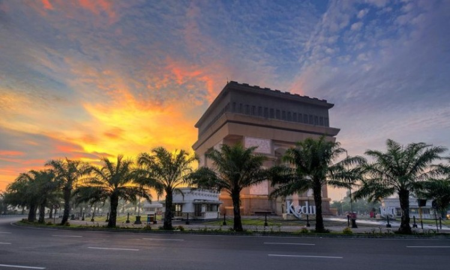
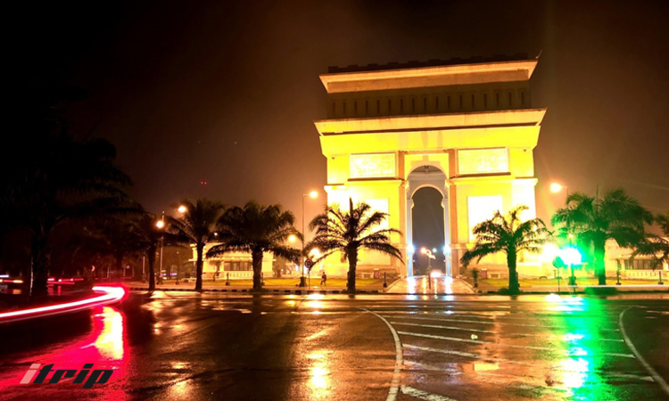
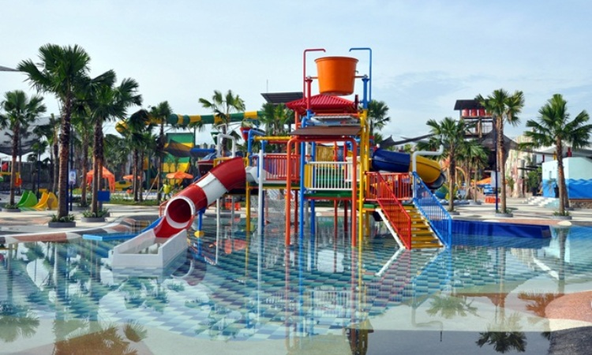
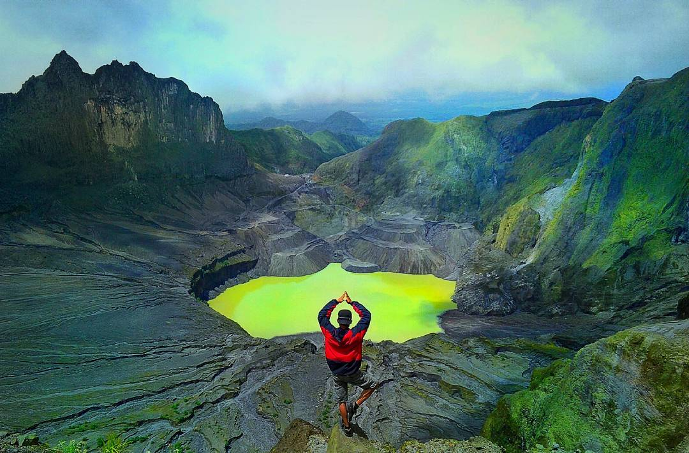
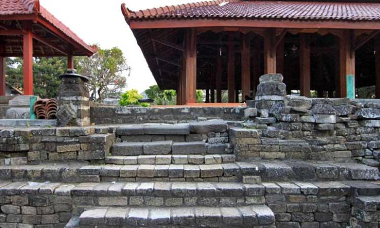
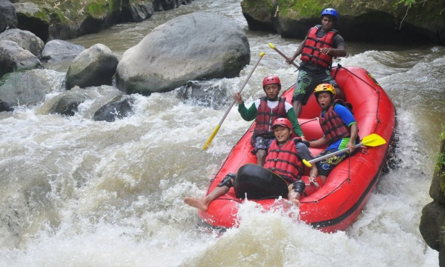
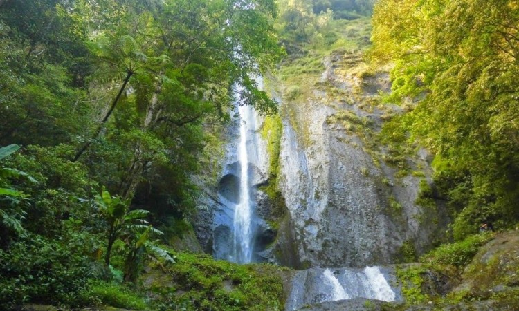

.jpg)
This is the Tourist Spot in My Hometown
Kediri merupakan sebuah Kota atau Kabupaten yang berada di Provinsi Jawa Timur, Kabupaten ini
menyimpan sejuta pesona alam yang menakjubkan dan tersembunyi sehingga masih banyak orang
yang belum mengetahui akan keindahannya. Kediri punya panorama alam mulai dari Goa, situs
bersejarah, spot foto foto , sampai air terjun yang memanjakan mata.
Jika Anda punya rencana untuk liburan ke Kediri, Jangan khawatir akan keindahannya, Kabupaten
ini menawarkan cukup banyak wisata pilihan untuk Anda dikunjungi. Kabupaten ini memiliki
banyak tempat-tempat wisata yang bernuansa alam,pantai, Sejarah, Religi maupun Kuliner yang
tak kalah dengan wisata Kota besar lainnya.
Untuk memudahkan Anda menemukan Spot Tempat wisata di Kediri yang paling indah dan
direkomendasikan untuk di datangi. Berikut saya akan berikan beberapa ulasan secara
singkat 7 Tempat Wisata di Kediri Terbaru yang harus anda kunjungi :

Ya Simpang lima gumul, mungkin beberapa dari kalian belum mengenal monumen simpang lima gumul. Monumen Simpang Lima merupakan salah satu monument terkenal yang selalu dikunjungi oleh para wisatawan luar kota yang sedang berkunjung ke Kediri. Bagi Anda yang penasaran dengan bentuk monumen terkenal yang satu ini, Anda dapat pergi ke daerah Simpang Lima Gumul yang berada di Jalan Erlangga Kota Kediri. Monumen ini dibuat persis menyerupai Arc de Triomphe yang berada di Paris. Jika Arc de Triomphe dibangun untuk menghormati para pejuang yang bertempur dan mati bagi Perancis dalam Revolusi Perancis dan Perang Napoleon, namun belum ada kejelasan mengapa dan untuk menghormati siapa Monumen Simpang Lima Gumul Kediri ini dibangun. Dalam beberapa sumber menyebutkan, bahwa didirikannya monumen ini dikarenakan terinspirasi dari Jongko Jojoboyo, raja dari Kerajaan Kediri abad ke-12 yang ingin menyatukan lima wilayah di Kabupaten Kediri.

Gumul Paradise Island merupakan salah satu waterpark yang ada dikediri. Gumul Paradise Island sendiri memiliki banyak daya tarik tersendiri, misalnya jika waterpark biasanya hanya menyediakan wahana air saja di Gumul Paradise Island juga menyediakan wahana non air. Contoh wahana non air yang disediakan adalah Rumah Hantu, Bioskop 4d, 3d art studio dan flying fox, terdengar menarik bukan???
Kediri seperti tidak ada habis-habisnya menghadirkan berbagai macam destinasi wisata alam yang sangat mengagumkan. Siapa yang tidak kenal dengan gunung kelud?? Gunung Kelud merupakan salah satu gunung berapi yang masih aktif di Jawa Timur. Gunung kelud menjadi semakin terkenal setelah letusannya yang terakhir pada tahun 2014 yang menyebabkan seluruh pulau jawa menjadi hujan abu, tetapi setelah letusan berakhir mulai muncul lah alam yang bagus disekitar gunung Kelud yang memanjakan mata. Tidak hanya memanjakan mata di sekitar lokasi gunung kelud terdapat sebuah tempat dengan fenomena yang menakjubkan yaitu tempat dimana benda yang seharusnya jatuh kebawah bisa bergerak keatas dengan sendirinya.
Selain wisata alam Kediri juga memiliki berbagai tempat dan situs peninggalan sejarah yang wajib dikunjungi untuk memperkaya wawasan Anda. Candi Setono Gedong sendiri merupakan salah satu candi di Kediri yang sudah ada dari zaman Kerajaan Singosari. Kediri memiliki banyak candi disebabkan oleh pada masa kerajaan dlu kediri sempat menjadi pusat dari kerajaan mataram kuno. Pada zaman Kerajaan Singosari, candi ini selalu digunakan sebagai tempat pemujaan Dewa Wisnu. Yang tidak kalah menarik dari candi ini adalah adanya relief dan artefak yang bergambar burung Garuda. Bagi Anda yang tertarik untuk mempelajari jejak peninggalan kebudayaan, tempat wisata ini dapat menjadi pilihan utama Anda.
Salah satu destinasi wisata yang sangat cocok dikunjungi bagi Anda yang ingin memacu adrenalin dengan mencoba olahraga arung jeram. Sensasi mendebarkan tidak akan pernah Anda lupakan setelah melewati track raftingnya yang memiliki panjang hingga 13 km. Bagi Anda yang penasaran dengan arung jeram ini, Anda bisa mengunjungi Desa Kediri Siman yang berada di Kecamatan Kepung, Kabupaten Kediri.
Destinasi wisata memang memiliki beragam tema. Ada yang terfokus untuk menghadirkan keasrian dan keindahan alamnya, ada juga yang terfokus pada keunikan tempatnya, dan lain-lain. Bagi Anda yang sedang mencari destinasi wisata alam, Air Terjun Dolo ini adalah salah satunya. Berada pada ketinggian 1800 Mdpl menjadikan air terjun yang memiliki tinggi hampir 25 meter ini sangat cocok dikunjungi untuk melepas penat Anda dari padatnya aktivitas rutin dengan merasakan sensasi segarnya air terjun yang jatuh dari ketinggian.Thank You for Visiting.
Have a nice day